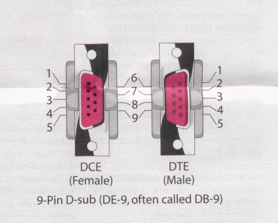

Linked graphics allows a person to click on a image and jump to another file. This ability can make your documents easier to use. Good clear graphics communicate quickly and enhance the usability of your document. The linked graphic shows up outlined in color depending on the preference settings of the browser.

Click the picture to see a definition of serial ports